How to build a storyboard
A storyboard is a guided tour of a dashboard. Each step is a saved view (the filters you set, the parameters you chose, the panel to bring into view) with a title and a line of narration. Viewers press play or the arrows and the dashboard itself changes, so they can stop at any step and explore. This page builds one from scratch in the Builder, then shows how to edit it, delete it and add insights.
1Open the dashboard in the Builder
Go to Dashboards in the left menu and find your dashboard (the search box narrows the list). Click Open in Builder.
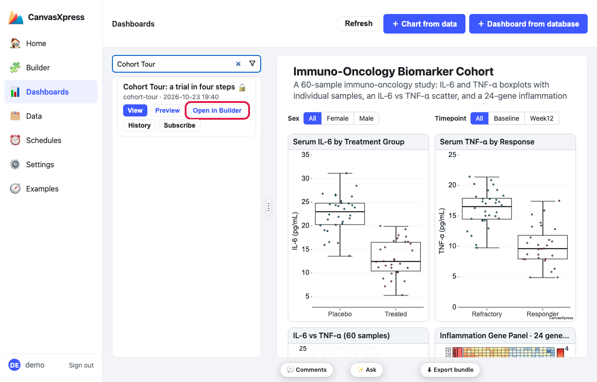
Dashboards → search → Open in Builder (outlined).
2Put the dashboard in the first view you want to show
A step stores what you see right now, so set it up first. Use anything that changes the view: a Filters panel (tick values, move a slider), a saved filter scheme from the scheme list, a control, or click a point to load a case. Here the saved scheme list is outlined; choosing Drug arm filters the whole dashboard to the drug arm.
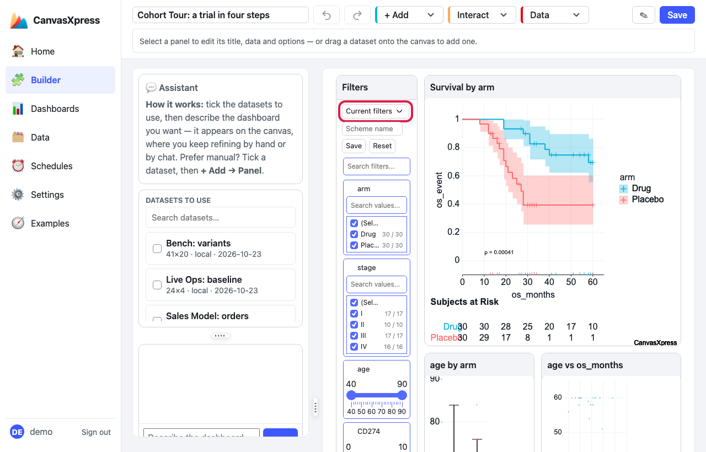
The Filters panel's scheme list (outlined) holds saved views.
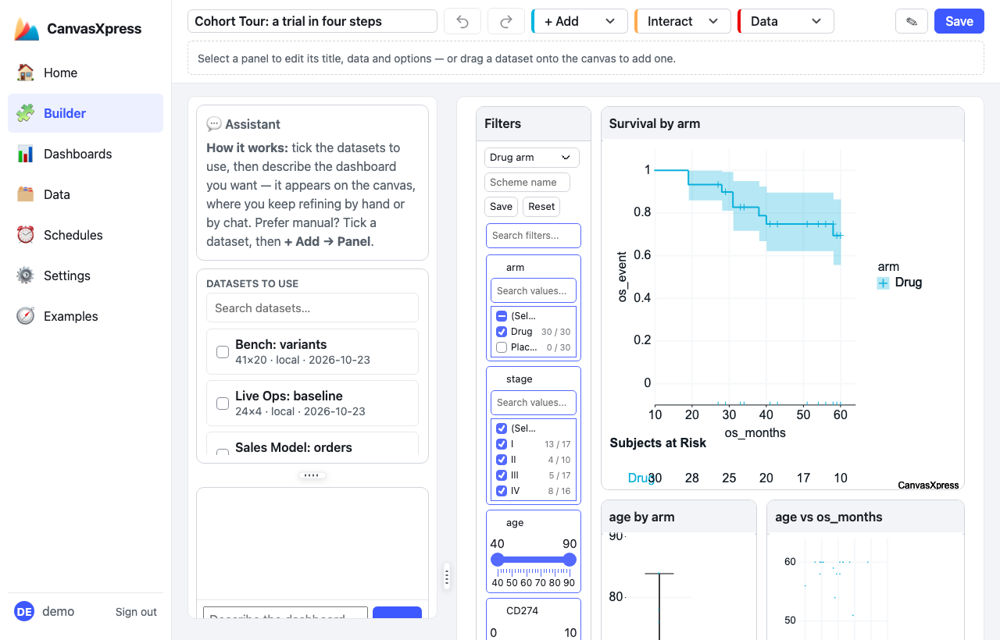
After choosing Drug arm: every chart now shows only the drug arm (30 of 60 patients).
3Open the Storyboard dialog
In the toolbar open the Data menu and click Storyboard.
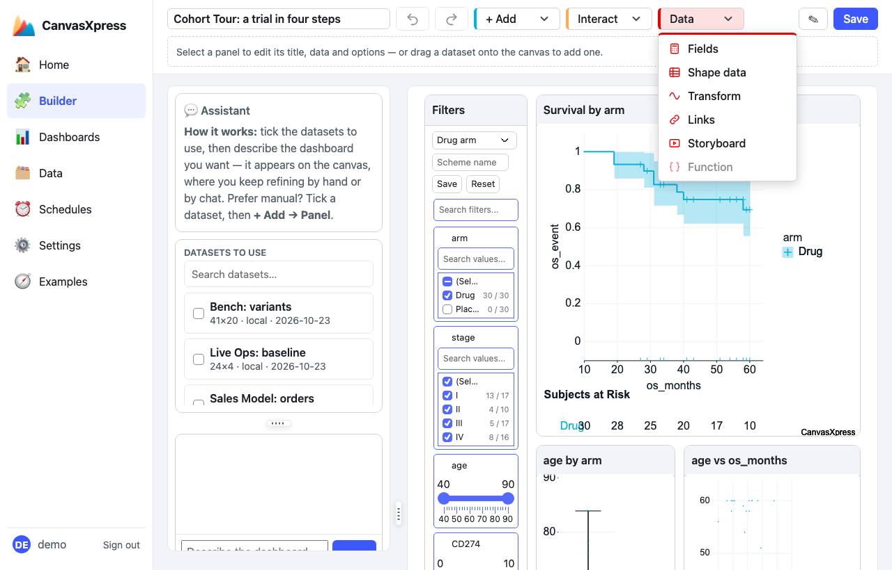
Data → Storyboard (outlined).
4Add a step from the current view
The dialog lists the steps so far (a new tour starts with none). Give the tour a title if you like, then click + Step from the current view. The dashboard behind the dialog is the view that gets stored.
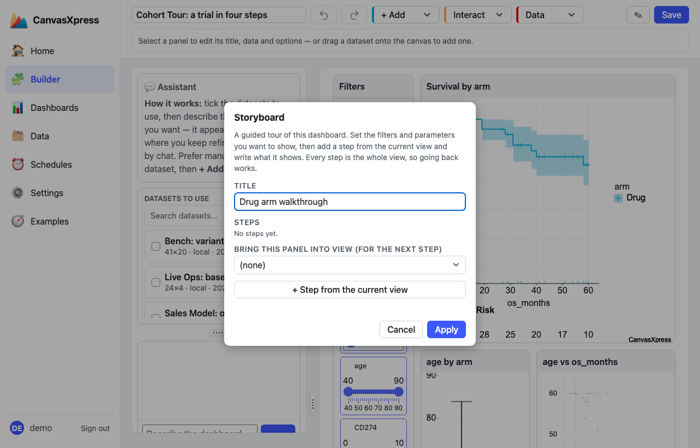
An empty tour: + Step from the current view (outlined) stores the view behind the dialog.
Type a short title and what the step shows. The line under the boxes says what was captured:
here filters: 1 is the Drug-arm filter.
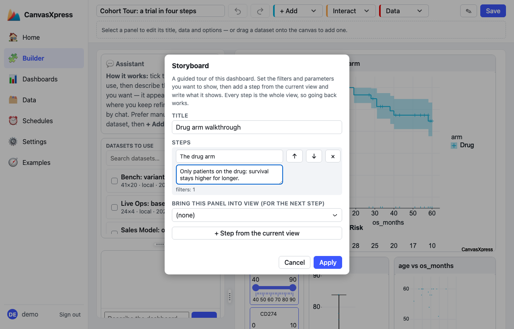
One step, with its title and narration. The small line shows what it applies.
5Add the other steps
Close the dialog with Apply, change the dashboard to the next view you want to show (a different filter, another case, a different scheme), reopen Data → Storyboard and click + Step from the current view again. Repeat until the tour is done. To bring a panel into view for a step, pick it in the Bring this panel into view list before clicking the button.
Use the ↑ and ↓ buttons to reorder and × to remove a step.
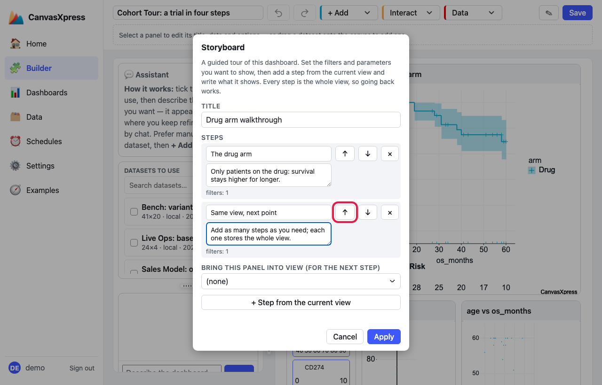
Reorder with the arrows (outlined), remove with ×.
6Apply, then Save the dashboard
Click Apply in the dialog, then Save at the top right of the Builder. Applying alone changes the dashboard you are editing; saving is what stores it.
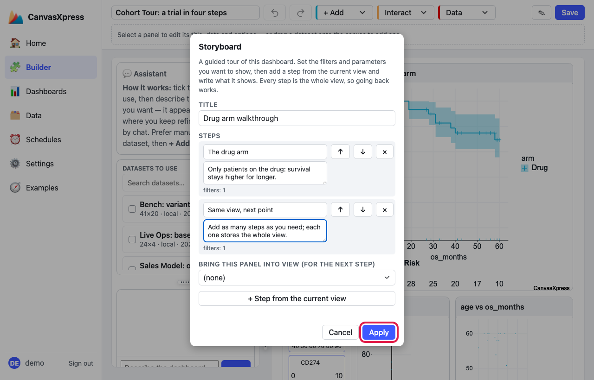
Apply (outlined) closes the dialog.
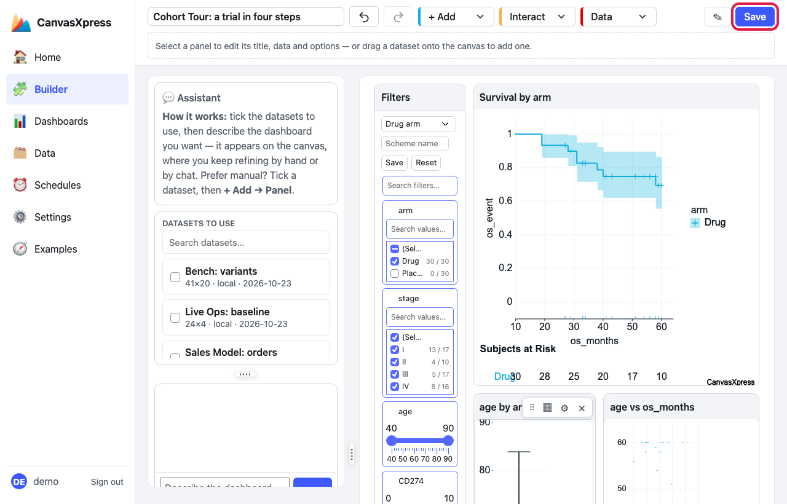
Save (outlined) stores the dashboard with its storyboard.
7Play it
On the Dashboards page click Preview on your dashboard. It opens full page with a player bar above the board: previous, play, next, one dot per step, and the title and narration of the current step. Nothing is applied until the viewer presses play or a step button.
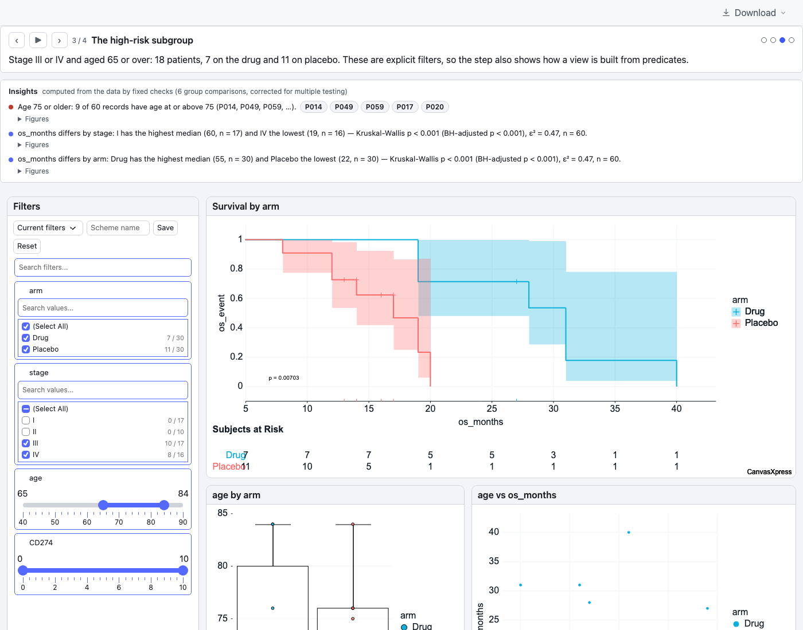
Step 3 of 4 playing: the bar shows the narration and the dashboard is filtered to that view.
Edit or delete a storyboard
- Edit: open Data → Storyboard again. Change titles and narration by typing, reorder with ↑ ↓, remove steps with ×, then Apply and Save. Cancel throws the edits away.
- Change what a step applies (its filters, parameters or panel): set the dashboard to the view you want, remove that step and add it again with + Step from the current view.
- Delete the whole storyboard: remove every step and Apply, then Save; the player disappears.
You can also open the pencil next to Save (Edit dashboard JSON), delete the
"storyboard"block and Save. - How long a step stays up while playing (default 8 seconds) is set in the JSON, per step or for the whole tour.
What a storyboard looks like in the JSON
"storyboard": {
"title": "Drug arm walkthrough",
"seconds": 8,
"steps": [
{ "title": "The whole cohort", "narration": "Forty patients, two arms." },
{ "title": "The drug arm", "narration": "Survival stays higher for longer.", "scheme": "Drug arm" },
{ "title": "One patient", "narration": "P007 on the case card.",
"params": { "case": "P007" }, "focus": "case", "seconds": 12 }
]
}
| Key | Meaning |
|---|---|
title, narration | Plain text shown in the bar (never read as HTML). |
scheme or filters | A saved filter scheme by name, or the filters themselves. Not both. |
params | Parameter values for this step; each name must be declared in the dashboard's params. |
focus | A panel id to scroll into view. |
seconds | How long this step stays up while playing. |
Optional: add insights
A dashboard can also show an Insights strip above the board: findings computed from the data by fixed
checks (outliers, group differences corrected for multiple testing, and any thresholds you declare), each with
its figures. There is no button for it yet. Open the pencil next to Save (Edit dashboard JSON), add
an insights block, and Save:
"insights": {
"thresholds": [
{ "field": "age", "op": "ge", "value": 75, "label": "Age 75 or older" }
]
}
An empty "insights": {} turns on the data-derived checks only. When the dashboard has a case card,
the records an insight names appear as buttons (for example P014) that load that patient. Insights show
on the Preview page and on shared links.
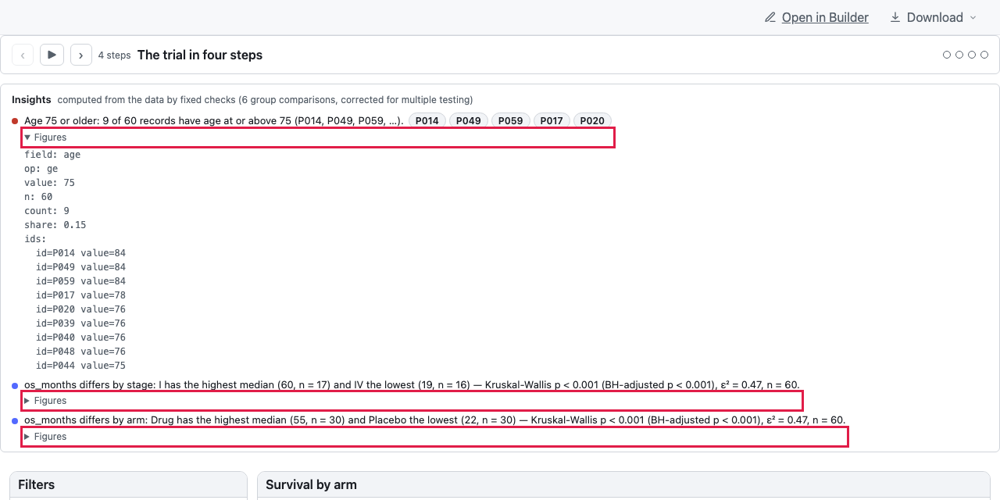
The player bar above the Insights strip; Figures opens the numbers behind a finding.
Tips
- Keep narration to a sentence or two, and quote numbers you can see on screen.
- Start the tour from the whole dashboard, so viewers see what the later steps narrow down.
- Have the tour end on something the viewer can act on, such as a patient on the case card.
- Press Preview and step through it yourself before you send it to anyone.
The same tour can be written by hand or generated: see docs/storyboards.md in the repository for
the full field reference.